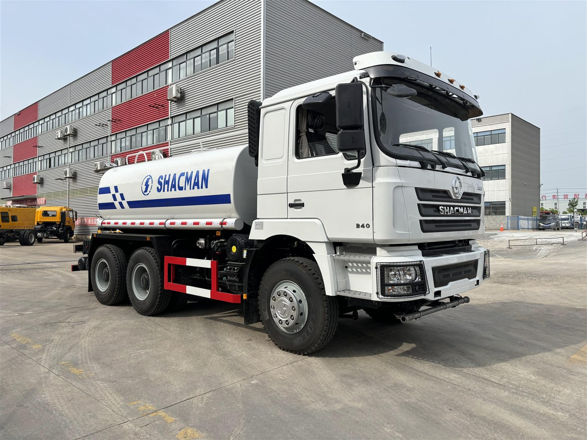

Direct answer: This guide is for overseas buyers evaluating the SHACMAN F3000 6x4 water tanker truck for Kenya. The photo, title and article all refer to the same vehicle type, and final specifications should be confirmed according to the order.
Road and construction applications
For Kenya road projects, mining support and municipal work, a water tanker should be specified around tank volume, pump performance, front spray, rear spray, side spray and optional water cannon. The truck photo clearly shows a SHACMAN water tank body.
What to confirm before quotation
Confirm whether the buyer needs dust suppression, road watering, construction water delivery or emergency support. Different work needs different spray bars, pump pressure and pipe layout.
Tank body and chassis matching
The final tank body should match chassis payload, road rules and slope conditions. Buyers should avoid choosing tank volume only by price; legal axle load and long-term maintenance matter more for daily operation.
Export proof for trust
For serious orders, request photos of tank body, pump system, valve layout, spray test and shipping preparation. These details help overseas buyers verify what is included.
- destination country, port and quantity;
- cargo or jobsite use, road condition and daily work cycle;
- target payload, body or tank volume, and local registration limits;
- preferred delivery term, inspection request and spare-parts needs.
Frequently asked questions
Can the spray system be customized?
Yes. Front, rear and side spray equipment can be discussed according to the job.
Is this a fuel tanker?
No. This article and image are for a water tanker truck.
What should Kenya buyers send?
Send tank volume target, route condition, spray equipment needs, port and quantity.
Related product page: SHACMAN F3000 6x4 water tanker truck. For price and configuration, use the RFQ form or WhatsApp.
Request a configuration quotation
Andy can help compare configuration, shipping and inspection details for your market.